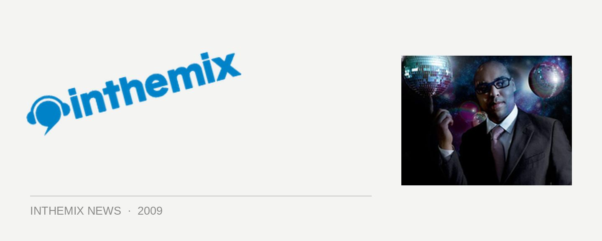

Sidney Samson giving us a Clubber's Guide to Spring
Sidney Samson is part of the new wave of Dutch house producers that also includes the likes of Laidback Luke and Fedde Le Grand, scoring a huge hit this year with Riverside and in September he’ll be bringing it to Australian audiences in support of Ministry of Sound’s upcoming Clubber’s Guide to Spring. He’ll be joined on the three-CD affair by Queensland bad boys the Stafford Brothers (who ranked #5 in the Sony inthemix50) as well as production whiz Sam La More.
Prior to the whopping success of Riverside, Sidney Samson’s heritage in clubbing stretches all the way back to the mid 90s where he played urban and RnB in his local clubs, before heading over the dark side of house later in the decade. Really starting to pump out the productions in 2003 (tunes like Nobody Move, Rock This and Girls), he stepped it up in 2007 when he started the Samsobeats record label with his production partner Gregor Salto. Riverside cometh…
Clubber’s Guide to Spring, mixed by Sidney Samson, Stafford Brothers and Sam La More, is out 11th September on Ministry of Sound and Unviersal. Catch the trio on tour below…
Fri 4th Sep – Gilligans, Cairns (SS, SLM)
Sat 5th Sep – Family, Brisbane (SS, SB, SLM)
Sun 6th Sep – Sundae Fundaze, Newcastle (SS)
Thur 10th Sep – Platinum, Gold Coast (SS)
Fri 11th Sep – Capitol, Perth (SS, SB, SLM)
Sat 12th Sep – Chinese Laundry, Sydney (SS, SB, SLM)
Sun 13th Sep – Alumbra, Melbourne (SS, SB)
Fri 18th Sep – Woodport Inn, Erina (SB)
Sat 19th Sep – HQ, Adelaide (SS)
Sat 19th Sep – Gold Coast, Platinum (SB, SLM)
Fri 25th Sep – HVB, Maitland (SB)
Sat 26th Sep – Discovery, Darwin (SB, SLM)
Sat 3rd Oct – Siroccos, Burnie (SB)
Sat 3rd Oct – Club4Play, Geelong (SLM)
Sun 4th Oct – Waves, Wollongong (SB)
Fri 9th Oct – Bundy Central, Bundaberg (SLM)
Sat 10th Oct – Rolling Rock, Noosa (SLM)
Sat 17th Oct – Roi Bar, Albury (SLM)
Sat 17th Oct – Plantation, Coffs Harbour (SB)
Fri 23rd Oct – Academy, Canberra (SB)
Fri 23rd Oct – Duke Hotel, Wagga (SLM)
Sat 24th Oct – King Street, Newcastle (SB)
Sat 24th Oct – Toombas, Toowoomba (SLM)
Fri 30th Oct – Mean Fiddler, Rouse Hill (SB, SLM)
Fri 6th Nov – Consortium, Townsville (SB)
Sat 7th Nov – New York, Launceston (SB, SLM)